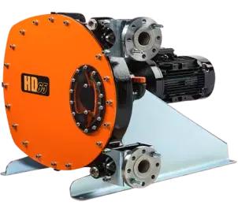

Официальный дистрибьютор насосного оборудования Abaque на территории Украины
Конструкция не предусматривает никаких дополнительных уплотнений и/или сальниковых набивок и не допускает трения металлических компонентов друг о друга. Шланг – это фактически единственная часть насоса, которая изнашивается.
Жидкость или другая перекачиваемая среда не контактирует с корпусом насоса и соприкасается исключительно с трубкой, что в свою очередь уберегает жидкость от попадания в нее инородных опасных включений
Замена шланга занимает не больше 10-15 минут. Стоит отметить, что шланг насоса очень прочен и может выдерживать долговременную нагрузку, благодаря использованию качественных эластомеров и многослойному армированию.
Сервисное обслуживание такого типа насоса занимает минимум времени
Данный тип насоса можно использовать в качестве "дозатора". Погрешность производительности расхода от скорости вращения вала можно оценить как ± 0,5 %, и даже лучше.
Работа на сухом ходу даже, на протяжении долгого времени, как уже было сказано ранее, не влияет на рабочие свойства насоса и не ускоряет его износ.
Перистальтические насосы - это отличное решение при перекачке мультифазных жидкостей.
Перистальтический насос защищен от протечек. Это особенно важно при перекачивании агрессивных и/или абразивных растворов.
Реверсное перекачивание жидкости
Тихая работа
Основные типоразмеры
Кривые
HD10
ДО 18 М³/Ч ПРИ 120 МБАР
Загрузить
HD15
ДО 35 М³/Ч ПРИ 120 МБАР
Загрузить
HD20
ДО 67 М³/Ч ПРИ 120 МБАР
Загрузить
HD25
ДО 92 М³/Ч ПРИ 120 МБАР
Загрузить
HD32
ДО 116 М³/Ч ПРИ 120 МБАР
Загрузить
HD40
ДО 184 М³/Ч ПРИ 120 МБАР
Загрузить
HDX40
ДО 258 М³/Ч ПРИ 120 МБАР
Загрузить
HD50
ДО 325 М³/Ч ПРИ 120 МБАР
Загрузить
HD65
ДО 67 М³/Ч ПРИ 120 МБАР
Загрузить
HDX40
ДО 92 М³/Ч ПРИ 120 МБАР
Загрузить
HDX65
ДО 116 М³/Ч ПРИ 120 МБАР
Загрузить
HDX80
ДО 184 М³/Ч ПРИ 120 МБАР
Загрузить
HD80
ДО 258 М³/Ч ПРИ 120 МБАР
Загрузить
HD100
ДО 325 М³/Ч ПРИ 120 МБАР
Загрузить